건축설비산업기사 (2019-04-27 기출문제)
1과목: 건축일반
1. 주택의 실내동선 계획에 관한 설명으로 옳지 않은 것은?
- 동선은 현관에서 시작된다.
- 짧고 직선적이어야 한다.
- 다른 행위를 방해하지 않아야 한다.
- 거실을 통과하여 각 실에 접근하는 것이 좋다.
(정답률: 86%)

2. 벽체의 모서리, 창문 옆 또는 붙임기둥에 많이 사용되는 블록의 종류는?
- 반블록
- 평마구리형 블록
- 가로근용 블록
- 인방블록
(정답률: 66%)
3. 다음 지붕 평면도 중 모임지붕은?
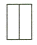
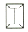
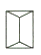
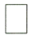
(정답률: 82%)
4. 전면도로와 상점 내부와의 경계인 숍 프런트(shop front)의 형식은 크게 3가지로 구분되는데 이에 해당되지 않는 것은?
- 개방형
- 폐쇄형
- 병렬형
- 혼합형
(정답률: 71%)
5. 다음 창호 중 개폐방식에 의한 종류가 아닌 것은?
- 미닫이 문
- 양판문
- 회전문
- 미서기 문
(정답률: 66%)
6. 개실형(복도형)사무실에 관한 설명으로 옳지 않은 것은?
- 방 길이에는 변화를 줄 수 있다.
- 방 깊이에는 변화를 줄 수 없다.
- 독립성은 있으나 공사비가 비교적 높다.
- 신축성이 있으며 전면적을 유용하게 이용할 수 있다.
(정답률: 49%)
7. 아파트 배치계획에서의 인동간격과 가장 거리가 먼 요소는?
- 일조
- 통풍
- 방화
- 단위세대의 면적
(정답률: 74%)
8. 실표면의 총 흡음량이 160m2 이고, 실의 크기가 10m×18m×4m인 학교 교실에서 세이빈(Sabine)의 공식을 이용하여 구한 잔향시간은?
- 0.42초
- 0.52초
- 0.62초
- 0.72초
(정답률: 42%)
9. 15층인 중소형 아파트를 시공할 때 현재 가장 많이 적용되는 구조 방식은?
- 내력벽식 구조
- 가구식 구조
- 현수 구조
- 박판 구조
(정답률: 84%)
10. 철골조에서 보와 슬래브의 합성 거동을 향상시키기 위하여 설치하는 부재는?
- 스터드 볼트(stud bolt)
- 슬리브(sleeve)
- 철근 간격재(spacer)
- 형틀 간격재(separator)
(정답률: 66%)
11. 5kg의 물을 20℃에서 60℃로 올리는데 필요한 열량 값은? (단. 물의 비열은 4.2kJ/kg·℃이다.)
- 420kJ
- 630kJ
- 840kJ
- 1⑤0kJ
(정답률: 73%)
12. 수평하중에 의한 목조 뼈대의 변형을 방지하는 가장 유효한 방법은?
- 버팀대를 넣는다.
- 부축기동을 넣는다.
- 가새를 넣는다.
- 붙임기둥을 넣는다.
(정답률: 74%)
13. 사무소 건축에서 코어시스템(core system)을 채용하는 이유와 가장 거리가 먼 것은?
- 개실의 독립성 보장
- 내진성능확보 등 구조적 이점
- 설비비의 절약
- 공용공간 집중으로 인한 사용상 이점
(정답률: 72%)
14. 시티호텔의 종류가 아닌 것은?
- 아파트먼트 호텔(Apartment Hotel)
- 클럽 하우스(Club House)
- 레지덴셜 호텔(Residential Hotel)
- 커머셜 호텔(Commercial Hotel)
(정답률: 79%)
15. 상점이 위치할 대지의 선정조건으로 옳지 않은 것은?
- 2면 이상 도로에 접하지 않은 곳
- 교통이 편리한 곳
- 사람의 통행이 많고 번화한 곳
- 눈에 잘 띄는 곳
(정답률: 87%)
16. 호텔건축 계획에 관한 설명으로 옳지 않은 것은?
- 사교부분은 공공성을 주체로 하며 호텔 전체의 매개공간 역할을 한다.
- 공공부분은 호텔의 가장 중요한 부분으로, 이에 의해 호텔의 형이 결정된다.
- 관리부분은 경영과 서비스의 중추적인 역할을 한다.
- 시티 호텔의 경우 부지의 제한으로 대지경계선에 따라 모양이 결정되기 쉽다.
(정답률: 66%)
17. 열려진 여닫이문이 자동으로 닫아지게 하는 창호철물은?
- 도어 스톱
- 도어 체크
- 문버팀쇠
- 크레센트
(정답률: 81%)
18. 일주일 평균 48시간 수업을 하는 어느 중학교에서 한 교실의 과학수업에 6시간 사용할 때 이 교실의 이용률은?
- 12.5%
- 14.5%
- 20.5%
- 32.5%
(정답률: 65%)
19. 내부결로의 방지대책으로 옳지 않은 것은?
- 단열재를 가능한 한 벽의 내측에 설치
- 벽체 내부온도를 그 부분의 노점온도보다 높게 할 것
- 실내의 수증기 발생 억제
- 벽체 내부의 수증기압을 포화수증기압보다 작게 할 것
(정답률: 76%)
20. 실내 환기 횟수의 정의로 옳은 것은?
- 환기량(m3/h)×실용적(m3)
- 환기량(m3/h)×실용적(m3)×2
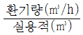
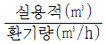
(정답률: 66%)
2과목: 위생설비
21. 급수방식 중 수도직결방식에 관한 설명으로 옳지 않은 것은?
- 급수압력이 일정하다.
- 고층으로의 급수가 어렵다.
- 정전으로 인한 단수의 염려가 없다.
- 위생성 측면에서 바람직한 방식이다.
(정답률: 73%)
22. 액화천연가스에 관한 설명으로 옳지 않은 것은?
- 주성분은 메탄이다.
- 공기보다 가벼워 안정성이 높다.
- 천연가스를 냉각 액화한 것을 말한다.
- 작은 용기에 담아 간단히 사용할 수 있다.
(정답률: 69%)
23. 통기관의 최소관경에 관한 설명으로 옳지 않은 것은?
- 각개통기관의 관경은 그것이 집속되는 배수관 관경의 1/2 이상으로 한다.
- 루프통기관의 관경은 배수수평지관과 통기수직관 중 작은 쪽 관경의 1/2 이상으로 한다.
- 결합통기관의 관경은 통기수직관과 배수수직관 중 작은 쪽의 관경 이상으로 한다.
- 배수수평지과의 도피통기관의 관경은 그것을 집속하는 배수수평지관의 관경보다 작게 해서는 안 된다.
(정답률: 37%)
24. 오수 중에 분해가능한 유기물이 용존산소의 존재 하에 미생물의 작용에 의해 산화분해되어 안정한 물질로 변해갈 때 소비되는 산소량을 의미하는 것은?
- pH
- ppm
- BOD
- COD
(정답률: 78%)
25. 기구배수 부하단위 산정에 기준이 되는 기구는?
- 욕조
- 세면기
- 소변기
- 대변기
(정답률: 83%)
26. 스프링클러설비의 배관 중 직접 또는 수직배관을 통하여 가지배관에 급수하는 배관은?
- 주배관
- 교차배관
- 급수배관
- 신축배관
(정답률: 63%)
27. 저탕식 전기가열기를 사용하여 0.2m3/h의 급탕을 공급할 경우 사용 전력은? (단, 물의 비열은 4.2kJ/kg·K, 급탕온도는 60℃, 급수온도는 10℃, 전기효율은 100% 이다.)
- 3.5kW
- 11.7kW
- 23.1kW
- 50.4kW
(정답률: 49%)
28. 강관 또는 동관 등의 배관으로 곡관을 만들어 배관의 신축을 흡수하는 신축이음쇠로 신축곡관이라고도 불리는 것은?
- 루프형 신축이음쇠
- 밸로즈형 신축이음쇠
- 스위블형 신축이음쇠
- 슬리브형 신축이음쇠
(정답률: 55%)
29. 베르누이의 정리에 따른 전압, 정압 및 동압에 관한 설명으로 옳은 것은?
- 동압에서 정압을 뺀 것이 전압이다.
- 압력수두에서의 압력은 전압을 의미한다.
- 배관의 관경이 증가하면 동압은 감소한다.
- 배관 내 마찰저항이 증가하면 정압은 증가한다.
(정답률: 54%)
30. 배수용 트랩으로서의 성능에 문제가 있어 사용하지 않는 것이 바람직한 트랩에 속하지 않는 것은?
- 2중 트랩
- 격벽 트랩
- 수봉식 트랩
- 가동부분이 있는 것
(정답률: 66%)
31. 저수 및 고가탱크 등 상수 탱크에 관한 설명으로 옳지 않는 것은?
- 물의 정체를 방지할 수 있는 조치를 취하여야 한다.
- 건물 최하층의 바닥 밑 또는 바닥 밑의 지중에 설치하지 않는다.
- 상수관 이외의 관이 상수 탱크를 관통하거나 상부를 횡단하지 않도록 한다.
- 상수 탱크의 천장•바닥 또는 주변 벽은 건축물의 구조부분과 겸용하도록 한다.
(정답률: 68%)
32. 연결살수설비에서 송수구의 설치 위치로 옳은 것은?
- 지면으로부터 높이가 0.5m 이상 1m 이하의 위치
- 지면으로부터 높이가 0.5m 이상 1.5m 이하의 위치
- 지면으로부터 높이가 1m 이상 1.5m 이하의 위치
- 지면으로부터 높이가 1m 이상 2m 이하의 위치
(정답률: 71%)
33. 관의 스케쥴 번호의 결정 요소는?
- 관의 내경
- 관의 외경
- 관의 두께
- 관의 길이
(정답률: 75%)
34. 강관 이음쇠와 사용 용도의 연결이 옳지 않은 것은?
- 엘보 - 관의 방향을 바꿀 때
- 와이 - 관을 도중에서 분기할 때
- 니플 - 관경이 같은 관을 연결할 때
- 플러그 - 관경이 다른 관을 연결할 때
(정답률: 75%)
35. 2개 이상의 트랩을 보호하기 위하여 기구배수관이 배수수평지관에 접속하는 지점의 바로 하류에서 취출하여, 통기수직관에 연결하는 통기관은?
- 습통기관
- 신정통기관
- 각개통기관
- 회로통기관
(정답률: 55%)
36. 급탕설비에 관한 설명으로 옳지 않은 것은?
- 배관은 적정한 압력손실 상태에서 피크시를 충족시킬수 있어야 한다.
- 냉수, 온수를 혼합사용 해도 압력차에 의한 온도변화가 없도록 하여야 한다.
- 개방형 급탕시스템에는 온도상승에 의한 압력을 도피시킬 수 있는 팽창탱크를 설치하여야 한다.
- 배관거리가 30m를 초과하는 중앙급탕 방식에서는 일정한 급탕온도 유지를 위하여 환탕관과 순환펌프를 설치한다.
(정답률: 62%)
37. 급탕설비의 가열방식에 관한 설명으로 옳지 않은 것은?
- 직접가열식은 간접가열식보다 열효율이 높다.
- 직접가열식은 보일러 안에 스케일 부착의 우려가 있다.
- 간접가열식은 일반적으로 규모가 큰 건물의 급탕에 사용 된다.
- 직접가열식에서 가열보일러는 난방용 보일러와 일반적으로 겸용하여 사용된다.
(정답률: 53%)
38. 고층건물의 급수시스템을 저층건물과 같이 단일계통으로 할 경우의 문제점과 가장 거리가 먼 것은?
- 저층부 수질 저하
- 저층부 소음 증대
- 저층부 수압 과대 작용
- 저층부 워터 해머 발생
(정답률: 64%)
39. 수도직결방식의 급수방식에서 수도 본관의 압력이 160kPa, 수전의 높이가 6m, 마찰손실 수두가 2mAq 일 때, 이 수전이 받는 압력은?
- 약 40kPa
- 약 80kPa
- 약 152kPa
- 약 240kPa
(정답률: 42%)
40. 대변기 세정수의 급수방식 중 로 탱크식에 관한 설명으로 옳은 것은?
- 대변기의 연속사용이 가능하다.
- 세정음은 유수음이 포함되기 때문에 소음이 크다.
- 단시간에 다량의 물이 필요하기 때문에 주변 수전에 큰 영향을 끼친다.
- 탱크로의 급수압력에 관계없이 세정 시 대변기로의 공급 압력이 일정하다.
(정답률: 57%)
3과목: 공기조화설비
41. 냉방부하 계산 시 잠열을 계산하지 않아도 되는 것은?
- 인체의 발생열량
- 유리로부터의 취득열량
- 극간풍에 의한 취득열량
- 외기의 도입으로 인한 취득열량
(정답률: 53%)
42. 유리창으로 통한 취득열량을 줄이기 위한 방법으로 옳지 않은 것은?
- 반사율이 큰 유리 사용
- 열관류율이 큰 유리 사용
- 투과율이 작은 유리 사용
- 차폐계수가 작은 유리 사용
(정답률: 64%)
43. 온수난방 배관에서 역환수방식(reverse return system)을 채택하는 가장 주된 이유는?
- 재료비 절감
- 수격작용 방지
- 펌프 동력절감
- 균등한 유량분배
(정답률: 70%)
44. 다음 중 배관의 신축에 대응하기 위해 사용되는 신축이음에 속하지 않는 것은?
- 스위블형
- 플로트형
- 슬리브형
- 벨로즈형
(정답률: 60%)
45. 다음과 같은 조건에서 난방 시 외기에 의한 현열부하는?
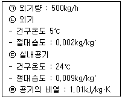
- 2.67kW
- 3.17kW
- 3.68kW
- 4.12kW
(정답률: 35%)
46. 다음 중 습공기선도에 직접 표현되지 않는 상태 값은?
- 비체적
- 엔탈피
- 열용량
- 상대습도
(정답률: 67%)
47. 건구온도 20℃, 절대습도 0.01kg/kg′인 습공기 10kg의 엔탈피는? (단, 건공기의 정압비열은 1.01kJ/kg·K, 수증기의 정압지열은 1.85kJ/kg·K, 0℃에서 포화수의 증발잠열은 2501kJ/kg 이다.)
- 201.6kJ
- 254.5kJ
- 369.6kJ
- 455.8kJ
(정답률: 27%)
48. 아네모스탯형 취출구에 관한 설명으로 옳지 않은 것은?
- 확산형 취출구이다.
- 확산반경이 크고 도달거리가 짧다.
- 주로 벽체 하부에 설치되어 사용된다.
- 1차 공기에 의한 2차 공기의 유인성능이 좋다.
(정답률: 64%)
49. 덕트의 방향전환을 위해 사용되는 장방형 단면의 원호형 엘보의 국부저항손실계수가 0.22일 때, 이 엘보에 발생하는 국부저항손실은? (단, 풍속은 10m/s, 공기의 밀도는 1.2kg/m3 이다.)
- 11.0Pa
- 13.2Pa
- 15.4Pa
- 19.6Pa
(정답률: 46%)
50. 다음 중 펌프의 비교회전수가 가장 적은 것은?
- 사류펌프
- 축류펌프
- 터빈펌프
- 볼류트펌프
(정답률: 52%)
51. 용량 15kW의 전동기로 작동되는 기계가 있다. 전동기는 실내에 있고 기계는 실외에 있을 경우 실내취득열량은? (단, 전동기에 대한 부하율(모터출력/정격출력)은 0.8, 전동기 효율은 0.86 이며, 기타 주어 지지 않은 조건은 무시한다.)
- 12.9kW
- 12kW
- 10.32kW
- 1.95kW
(정답률: 20%)
52. 배관에 설치하여 관속의 유체에 섞여 있는 모래 등의 이물질을 제거하여 기기의 성능을 보호하는 기구로서 여과기라고도 불리는 것은?
- 트랩
- 밸브
- 볼조인트
- 스트레이너
(정답률: 75%)
53. 다음 중 증기트랩의 설치위치로 가장 적당한 곳은?
- 펌프의 입구
- 펌프의 출구
- 방열기의 입구
- 방열기의 환수구
(정답률: 68%)
54. 외기의 이산화탄소(CO2) 함유량이 300ppm, 사람의 호흡 시 1인당 CO2 배출량이 0.017m3/h인 경우, 1인당 필요한 환기량은? (단, CO2의 실내허용농도는 1000ppm이다.)
- 24.3m3/h·인
- 25.9m3/h·인
- 26.7m3/h·인
- 28.3m3/h·인
(정답률: 38%)
55. 보일러에 관한 설명으로 옳지 않은 것은?
- 입형보일러는 사용압력이 높아 규모가 큰 건물에 주로 사용된다.
- 노통 연관보일러는 부유수면이 넓어서 급수 조절이 용이하다.
- 관류보일러는 수관보일러와 같이 수관으로 되어 있으나 드럼이 없다.
- 수관보일러는 대형 건물 또는 병원이나 호텔 등과 같이 고압증기를 다량 사용하는 곳이나 지역난방 등에 사용된다.
(정답률: 59%)
56. 송풍량 300m3/min, 정압 30mmAq 인 송풍기의 회전수를 높여 풍량을 360m3/min로 변화시킬 경우 정압은?
- 36mmAq
- 43.2mmAq
- 51.8mmAq
- 64.6mmAq
(정답률: 42%)
57. 바닥복사난방에 관한 설명으로 옳지 않은 것은?
- 증기난방에 비해 쾌적감이 높다.
- 예열시간이 짧기 때문에 간헐난방에 적합하다.
- 천장고가 높은 경우에도 난방감을 얻을 수 있다.
- 실내에 방열기를 설치하지 않으므로 바닥이나 벽면을 유용하게 이용할 수 있다.
(정답률: 66%)
58. 다음과 같은 특징을 갖는 냉동기는?
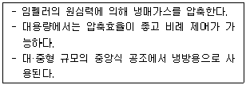
- 터보식 냉동기
- 흡수식 냉동기
- 왕복동식 냉동기
- 스크루식 냉동기
(정답률: 59%)
59. 덕트의 배치방식 중 개별덕트방식에 관한 설명으로 옳은 것은?
- 공장의 급배기에 주로 사용된다.
- 소요되는 덕트 스페이스가 작다.
- 각 실의 개별 제어성이 우수하다.
- 공사비는 저렴하나 실내에서 기류 분포가 좋지 않다.
(정답률: 42%)
60. 공기조화시스템에서 공기를 가습하는 방법으로 옳지 않은 것은?
- 증기의 직접분무
- 온수의 직접분무
- 에어 와셔의 이용
- 직접 팽창코일의 이용
(정답률: 60%)
4과목: 건축설비관계법규
61. 바닥면적이 200m2인 학교 교실에 채광을 위하여 설치하는 창문등의 최소 면적은? (단, 별도의 조명장치를 설치하지 않고 창문등으로만 채광을 하는 경우)
- 10m2
- 20m2
- 30m2
- 40m2
(정답률: 69%)
62. 6층 이상의 거실면적의 합계가 20000m2인 15층 아파트에 설치하여야 할 승용승강기의 최소 대수는? (단, 12인승 승용승강기의 경우)
- 5대
- 6대
- 7대
- 8대
(정답률: 43%)
63. 건축물의 용도변경과 관련된 시설군 중 주거 업무시설군에 속하지 않는 것은?
- 공동주택
- 업무시설
- 노유자시설
- 교정 및 군사시설
(정답률: 36%)
64. 건축물의 에너지절약설계기준에 따른 야간단열장치의 총열관류저항 기준은?
- 0.1m2·K/W 이상
- 0.2m2·K/W 이상
- 0.3m2·K/W 이상
- 0.4m2·K/W 이상
(정답률: 62%)
65. 건축물의 에너지절약설계기준상 다음과 같이 정의되는 용어는?
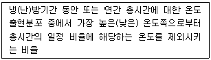
- 효율
- 위험률
- 수용률
- 분포율
(정답률: 70%)
66. 건축물의 설비기준 등에 관한 규칙에 따라 피뢰설비를 설치하여야 하는 대상 건축물의 높이 기준은?
- 20m 이상
- 24m 이상
- 27m 이상
- 31m 이상
(정답률: 66%)
67. 피난용 승강기의 설치에 관한 기준 내용으로 옳지 않은 것은?
- 예비전원으로 작동하는 조명설비를 설치할 것
- 승가장의 바닥면적은 승강기 1대당 5m2 이상으로 할 것
- 각 층으로부터 피난층까지 이르는 승강로를 단일구조로 연결하여 설치할 것
- 승강장의 출입구 부근의 잘 보이는 곳에 해당 승강기가 피난용 승강기임을 알리는 표지를 설치할 것
(정답률: 67%)
68. 건축물의 일부를 완공하여 임시로 사용하고자 할 때 임시사용승인의 기간은 몇 년 이내를 원칙으로 하는가?
- 1년
- 2년
- 3년
- 4년
(정답률: 55%)
69. 다음은 다중이용시설을 신축하는 경우 기계환기설비를 설치하여야 하는 대상 다중이용 시설에 관한 기준 내용이다. ( )안에 알맞은 것은?
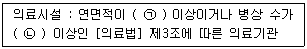
- ㉠ 1000m2, ㉡ 100개
- ㉠ 1000m2, ㉡ 200개
- ㉠ 2000m2, ㉡ 100개
- ㉠ 2000m2, ㉡ 200개
(정답률: 50%)
70. 특정소방대상물이 문화 및 집회시설인 경우, 모든 층에 스프링클러설비를 설치하여야 하는 수용인원 기준은? (단, 동·식물원은 제외)
- 50명 이상
- 100명 이상
- 150명 이상
- 200명 이상
(정답률: 58%)
71. 건축물의 바깥쪽에 설치하는 피난계단의 유효너비는 최소 얼마 이상으로 하여야 하는가?
- 0.7m
- 0.8m
- 0.9m
- 1.0m
(정답률: 63%)
72. 다음 승강기의 설치에 관한 기준 내용이다. 밑줄 친 대통령령으로 정하는 건축물의 기준 내용으로 옳은 것은?
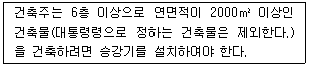
- 층수가 6층인 건축물로서 각 층 거실의 바닥 면적 300m2 이내마다 1개소 이상의 직통계단을 설치한 건축물
- 층수가 6층인 건축물로서 각 층 거실의 바닥 면적 500m2 이내마다 1개소 이상의 직통계단을 설치한 건축물
- 연면적이 2000m2인 건축물로서 각 층 거실의 바닥 면적 300m2 이내마다 1개소 이상의 직통계단을 설치한 건축물
- 연면적이 2000m2인 건축물로서 각 층 거실의 바닥 면적 500m2 이내마다 1개소 이상의 직통계단을 설치한 건축물
(정답률: 40%)
73. 다음은 거실등의 방습에 관한 기준 내용이다. ( )안에 알맞은 것은?
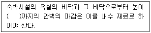
- 0.5m
- 1m
- 1.2m
- 1.5m
(정답률: 56%)
74. 건축법령상 다중주택이 갖춰야 할 요건에 속하지 않는 것은?
- 19세대 이하가 거주할 수 있을 것
- 독립된 주거의 형태를 갖추지 아니한 것
- 1개 동의 주택으로 쓰이는 바닥면적의 합계가 330m2 이하일 것
- 학생 또는 직장인 등 여러 사람이 장기간 거주할 수 있는 구조로 되어 있는 것
(정답률: 47%)
75. 에스컬레이터는 건축물의 출입구에 설치하는 회전문으로부터 최소 얼마 이상의 거리를 두어야 하는가?
- 2m
- 4m
- 6m
- 8m
(정답률: 74%)
76. 건축물을 건축하려는 경우, 허가 대상 건축물이라 하더라도 특별자치시장·특별자치도지사 또는 시장·군수·구청장에게 국토교통부령으로 정하는 바에 따라 신고를 하면 건축허가를 받은 것으로 보는 건축물의 연면적 기준은?
- 연면적의 합계가 100m2 이하인 건축물
- 연면적의 합계가 200m2 이하인 건축물
- 연면적의 합계가 300m2 이하인 건축물
- 연면적의 합계가 500m2 이하인 건축물
(정답률: 38%)
77. 다음은 특정소방대상물의 소방시설 설치의 면제에 관한 기준 내용이다. ( )안에 알맞은 것은?
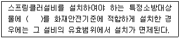
- 연결살수설비
- 옥내소화전설비
- 옥외소화전설비
- 물분무등소화설비
(정답률: 69%)
78. 다음은 연결살수설비를 설치하여야 하는 특정 소방대상물에 관한 기준 내용이다. ( )안에 알맞은 것은?
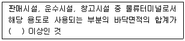
- 300m2
- 500m2
- 1000m2
- 1500m2
(정답률: 26%)
79. 다음의 소방시설 중 소화활동설비에 속하지 않는 것은?
- 제연설비
- 비상콘센트설비
- 자동화재속보설비
- 무선통신보조설비
(정답률: 51%)
80. 6층 이상인 건축물로서 건축물의 거실(피난층의 거실 제외)에 국토교통부령으로 정하는 기준에 따라 배연설비를 하여야 하는 대상 건축물에 속하지 않는 것은?
- 운동시설
- 종교시설
- 제1종 근린생활시설
- 교육연구시설 중 연구소
(정답률: 43%)